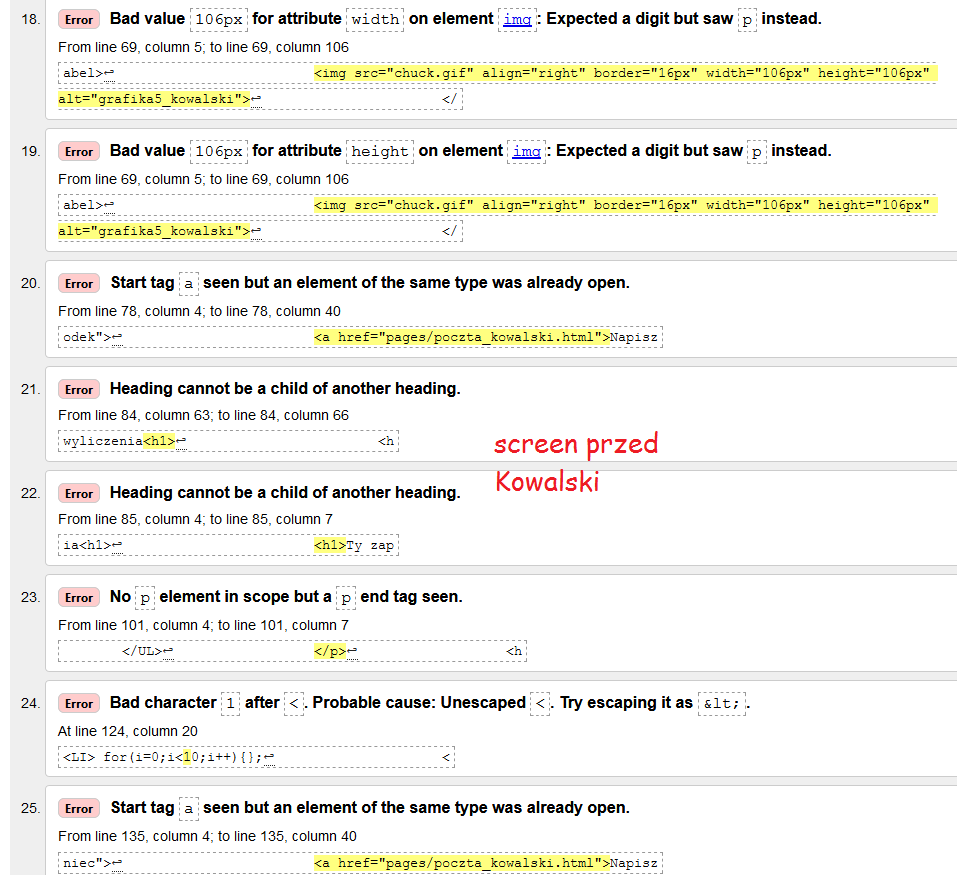
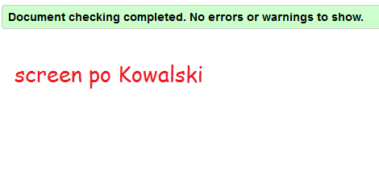

Napisz maila
Pobierz plik
Środek strony
Koniec strony
Zobacz tabelę
Wyświetl formularz
Kowalski
Kowalski
Kowalski
Konrad
Konrad
Konrad
Konrad
Konrad
Konrad
Konrad
Kowalski
Kowalski
Kowalski
:) - uśmiech
:'( - płacz
:D - szeroki uśmiech
:C - duży smutek
>:( - złość
;p - wyluzowany
Adres: 66-420, Swarożyce, Mieszka I-szego, 42,15
Ulubiony aktor: Tomasz Karolak
Ulubiony zespół muzyczny:
Queen.
Data urodzenia: 21 nie_paźdzernik 2002.
H2SO4
x*x=x2
Żart o lekarzu
Żart o traktorze
Żart o Chucku Norrisie
nazwisko ucznia imie ucznia
Kowalski Konrad
Walidacja - proces poprawiania błędów w html'u lub css'ie. Do walidacji przeznaczone są specjalne strony lub programy, np. http://validator.w3.org/


Napisz maila
Pobierz plik
Początek
Koniec strony
Zobacz tabelę
Wyświetl formularz
poniżej są trzy wyliczenia z różnymi znakami wyliczenia
Ty zaproponuj swoje, związane z informatyką
- Dziesiętny
- Binarny
- Heksadecymalny
- intel core i3
- intel core i5
- intel core i7
poniżej są trzy numerowania z różnymi znakami numerowania
Ty zaproponuj swoje, związane z informatyką
- C
- C++
- Java
- Windows
- Linux
- MacOS
- AMD Ryzen 3
- AMD Ryzen 5
- AMD Ryzen 7
- funkcje C++
- if(){}else{};
- do{}while();
- for(i=0;i<10;i++){};
- podzespoły komputera
- płyta główna
- karta graficzna
- procesor
Napisz maila
Pobierz plik
Początek
Srodek strony
Zobacz tabelę
Wyświetl formularz